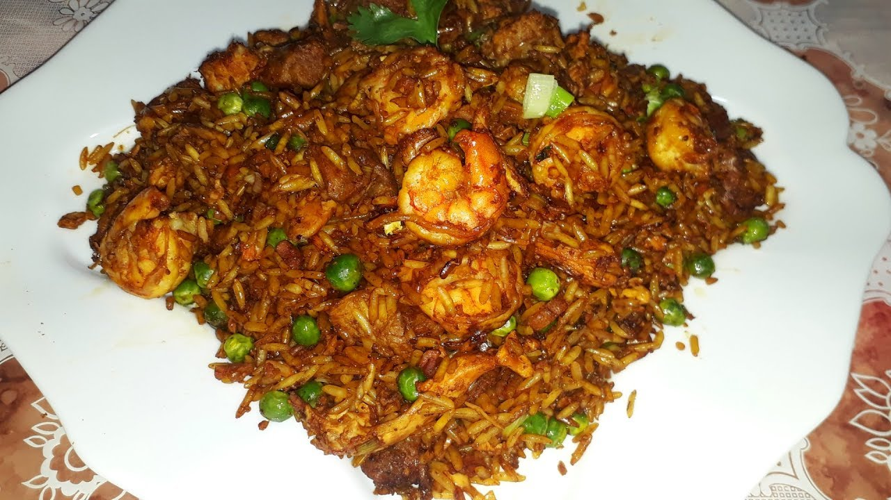

Chaulafan

The chaulafan is a Chinese-latino combination, it is the traditional chinese fried rice with some ingredients found on latin america.
This dish is an asian fried rice combined with ingredients such as cilantro, coliflower, shrimps, lamb. This ingredients are typically found on the latinamerican region with ease, so they are very popular on this dish.
Ingredients
- Rice
- shrimps
- cilantro
- onions
- oil
- soy sauce
- coliflower
- lamb
- chicken
Steps
- First slash all the ingredients into julienne
- Now heat the oil on a wok, but if you don't have one, you can use a normal pan
- put the vegetables first on the wok
- now wait untill they have a golden looking color
- now you start adding the meat, starting by the lamb
- once the lamb is sealed add the chicken
- Once the chicken is sealed now you can add the shrimp and and egg
- now revolve until everything is mixed
- after mixing everything add the rice
- add the soy sauce and mix again
- now wait untill everything is well mixed
- There you go! Now you have a Chaulafan of our own.